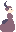
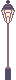
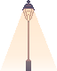
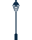
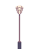
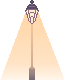
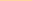
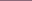
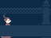
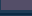

The themeEl tema
If You Can't See It, It Doesn't Exist!
Theme of the UJI Game Jam 2026 · Spooky Edition Tema de la UJI Game Jam 2026 · Spooky Edition
The jam handed out a theme and an optional second one: a palette of eight colours called SLSO8. Both ended up written into the filenames. Nearly every sprite exists twice, once as Dark and once as Light — same shape, different colour. That is the whole game, in two files.
La jam daba un tema y otro opcional: una paleta de ocho colores llamada SLSO8. Los dos acabaron escritos en los nombres de archivo. Casi cada sprite existe dos veces, como Dark y como Light — la misma forma, otro color. En eso consiste el juego entero, en dos archivos.
The remaining 8,6 % is not a second palette. It is the trail left by flattening layers on export — near-twins sitting one unit away from ffd4a3. Counted, not assumed.
El 8,6 % restante no es una segunda paleta. Es el rastro de aplanar capas al exportar: casi gemelos a una unidad de ffd4a3. Contado, no supuesto.
The ghostEl fantasma
A ghost is off to visit its ghost grandparents in another cemetery, and the way there runs down a street full of humans. Two things happen at once: the humans are frightened of the ghost, and the ghost is frightened of them screaming. So it does everything it can not to be seen.
Un fantasma va a visitar a sus abuelos fantasmas a otro cementerio, y para llegar tiene que cruzar una calle de humanos. Pasan dos cosas a la vez: los humanos se asustan del fantasma, y el fantasma se asusta de que griten al verle. Así que hace todo lo posible por que no le vean.


One silhouette, two colours. Nothing else changes — and that is the mechanic in full: in the dark, nobody sees you. Una silueta, dos colores. No cambia nada más — y ahí está la mecánica entera: en la oscuridad no te ven.
The blink is two frames of eight by eight pixels. At that size an eye is three pixels, and closing it means moving one of them. El parpadeo son dos fotogramas de ocho por ocho píxeles. A ese tamaño un ojo son tres píxeles, y cerrarlo consiste en mover uno.
The humansLos humanos
Two passers-by walk the street: a top hat and a wide skirt, four frames each. They are not chasing anyone. The danger is quieter than that — if one of them stands under a streetlight at the same time as the ghost, the ghost is seen, and the walk starts again from the last checkpoint.
Dos viandantes recorren la calle: un sombrero de copa y un vestido de vuelo, cuatro fotogramas cada uno. No persiguen a nadie. El peligro es más callado: si uno de ellos queda bajo la luz de una farola al mismo tiempo que el fantasma, le delata, y hay que volver al último checkpoint.


The second one is numbered 0, 1, 2 and 4. There is no NPC2_3 on disk — the frame is inside the spritesheet, but it never came out as its own file. Jam arithmetic, left as it was found.
La segunda está numerada 0, 1, 2 y 4. No hay ningún NPC2_3 en el disco: el fotograma está dentro de la hoja, pero nunca salió como archivo suelto. Aritmética de jam, dejada tal cual se encontró.
The ones carrying a torchLos que llevan linterna



Some humans patrol with a torch, and that beam gives you away just as well as a streetlight. Fifty-two pixels wide, and the only moving light in the game. Algunos humanos patrullan con linterna, y ese haz delata igual que una farola. Cincuenta y dos píxeles de ancho, y la única luz del juego que se mueve.
The streetlightLa farola
The most worked-on object of the jam, and the one the game is built around. It was redrawn from scratch four times, the canvas widening each time to make room for more light.
El objeto más trabajado de la jam, y aquel alrededor del cual gira el juego. Se redibujó de cero cuatro veces, y el lienzo se fue ensanchando para dar sitio a más luz.
Four generationsCuatro generaciones



The first one was sixteen pixels wide and curled like wrought iron. It went. What replaced it is plain, straight and symmetrical — because the light had to fall in a readable cone, and a winding post throws a crooked shadow. It still carries the white of its canvas: transparency came later. La primera medía dieciséis píxeles de ancho y se enroscaba como el hierro forjado. Se fue. Lo que vino después es sobrio, recto y simétrico — porque la luz tenía que caer en un cono legible, y un poste sinuoso da una sombra torcida. Todavía arrastra el blanco de su lienzo: la transparencia llegó después.
Seven statesSiete estados



The cone lives in its own file, apart from the post. That is what lets the light turn on without redrawing the lamp — and the two files named REFERENCIA are the ones kept on screen while painting the rest, to keep the brightness honest.
El cono vive en su propio archivo, aparte del poste. Eso permite encender la luz sin volver a dibujar la farola — y los dos archivos llamados REFERENCIA son los que se quedaron a la vista mientras se pintaba el resto, para no perder de vista el brillo.
The streetLa calle
Wrought-iron railings, a pavement and a drain. Three pieces, repeated, are the whole road to the cemetery.
Una verja de hierro, una acera y una alcantarilla. Tres piezas, repetidas, son todo el camino hasta el cementerio.


The drain is nine pixels tall and it is the only place to hide. Everything else in this chapter is scenery; this one is a verb. La alcantarilla mide nueve píxeles de alto y es el único sitio donde esconderse. Todo lo demás en este capítulo es decorado; esta es un verbo.
Light and colourLuz y color
The smallest files in the whole project: eight strips, one pixel tall, in two colours. They are a beam fading out, frame by frame — sixty pixels of light, then thirty-two, then sixteen, then four.
Los archivos más pequeños de todo el proyecto: ocho tiras de un píxel de alto, en dos colores. Son un haz apagándose, fotograma a fotograma — sesenta píxeles de luz, luego treinta y dos, luego dieciséis, luego cuatro.


Brillo1 — Brillo4 · Naranja / Morado 60 × 1, 32 × 1, 16 × 1, 4 × 1 px
Four plants, twiceCuatro plantas, dos veces


Hover or tap any of them to swap palettes. A sprout is twelve pixels of plant, and it still gets two moods. Pasa el ratón o toca cualquiera para cambiar de paleta. Un brote son doce píxeles de planta, y aun así le tocan dos estados de ánimo.
The menu that looked brokenEl menú que parecía roto
Open the game and there is almost nothing on screen. Most people think it is broken. What you have to do is click the bulb of the streetlight — the one that is flickering — and once it is lit, the buttons are there and you can play. The same thing this page did to you at the top.
Abres el juego y no se ve casi nada. Mucha gente piensa que está roto. Lo que hay que hacer es clicar en la bombilla de la farola — la que está titilando — y, una vez encendida, aparecen los botones y puedes jugar. Lo mismo que esta página te ha hecho a ti ahí arriba.


Three states, three buttonsTres estados, tres botones


Boton{Play,Credits,Back}{Idle,Selected/Highlted,Pressed}.png 450 × 143 px
These are the only pieces in the game that are not pixel art. At 450 by 143 they sit off the 16-pixel grid entirely — painted soft and round, where everything else is hard-edged. The interface is allowed to be made of a different material than the world. Son las únicas piezas del juego que no son pixel art. A 450 por 143 se salen por completo de la rejilla de 16 píxeles — pintadas blandas y redondas, mientras todo lo demás tiene el borde duro. A la interfaz se le permite estar hecha de otro material que el mundo.


The four keys are the only vector drawings in the project. Everything else was placed pixel by pixel. Las cuatro teclas son los únicos dibujos vectoriales del proyecto. Todo lo demás está puesto píxel a píxel.
ProcessProceso
Krita keeps a copy of the previous save next to every file. Thirty of them survived the jam, and together they are a record nobody meant to keep: the state of each sprite one step before the one that shipped.
Krita guarda una copia del guardado anterior junto a cada archivo. Treinta sobrevivieron a la jam, y juntas son un registro que nadie pretendía dejar: el estado de cada sprite un paso antes del que se entregó.
Checking the scaleComprobando la escala

The lady is standing inside the railing file. She was pasted in to see whether the bars came up to her shoulder, and then painted out. Nothing in the finished tile says she was ever there. Hay una dama de pie dentro del archivo de la verja. Se pegó ahí para ver si los barrotes le llegaban al hombro, y luego se borró. En el tile terminado no queda ni rastro de que estuviera.
Growing by one pixelCreciendo un píxel


There is no Suelo.kra any more. It was reused through Save As to make alcantarilla.kra and Plantas.kra, and the original lost its name along the way. The two backups above are all that is left of it — which is also how the drain and the plants came to be born on the pavement's canvas.
Ya no existe ningún Suelo.kra. Se reutilizó con «Guardar como» para hacer alcantarilla.kra y Plantas.kra, y por el camino el original perdió su nombre. Los dos backups de arriba son todo lo que queda de él — y es también la razón de que la alcantarilla y las plantas nacieran en el lienzo de la acera.
Watching it happenVerlo ocurrir
Five and a half hours of screen recording survived the jam. These three are the whole of it, sped up — one frame every few seconds — and they do not start downloading until you press play. De la jam sobrevivieron cinco horas y media de grabación de pantalla. Estos tres clips son todo aquello, acelerado — un fotograma cada pocos segundos — y no empiezan a descargarse hasta que les das al play.
Forty-eight hoursCuarenta y ocho horas
- Fri 21:22 Screen recording starts. The ghost is the first thing drawn. Empieza la grabación de pantalla. El fantasma es lo primero que se dibuja.
- Fri 23:34 Dark and Light versions of the ghost, the blink, the first two humans. Versiones Dark y Light del fantasma, el parpadeo, los dos primeros humanos.
- Sat 13:53 The street: railings, pavement, drain. La calle: verja, acera, alcantarilla.
- Sat 15:23 The plants and the one-pixel beams, in both palettes. Las plantas y los haces de un píxel, en las dos paletas.
- Sat 17:14 The longest stretch of the jam — an hour and thirty-five minutes, all of it the streetlight. El tramo más largo de la jam — una hora y treinta y cinco minutos, toda ella la farola.
- Sat 19:43 The interface begins: Play, then Credits, then Back. Empieza la interfaz: Play, luego Credits, luego Back.
- Sat 22:04 The torch beam, and the humans get their walk cycles. El haz de la linterna, y los humanos consiguen su ciclo de andar.
- Sun 00:42 The last file saved is the menu streetlight. The first thing a player sees was the last thing drawn. El último archivo guardado es la farola del menú. Lo primero que ve el jugador fue lo último que se dibujó.
CreditsCréditos
All the art in this book was made by Julia Fernández Bermejo during the jam — every sprite, the environment, the light, the interface. The only piece of art in the game that is not hers is the checkpoint statue. She also put together the itch.io page and cut the trailer from footage captured inside Unity. Todo el arte de este libro lo hizo Julia Fernández Bermejo durante la jam — cada sprite, el escenario, la luz, la interfaz. La única pieza de arte del juego que no es suya es la estatua del checkpoint. También montó la página de itch.io y editó el tráiler con grabaciones capturadas dentro de Unity.
- Team
- Equipo
- Jupeluche — Pere Mengual Roca · Luis Crespo Mejías · Sergio Angulo Gómez · Julia Fernández Bermejo
- Jam
- Jam
- UJI Game Jam 2026 · Spooky Edition — Universitat Jaume I, 6–8 Novemberde noviembre de 2026
- Theme
- Tema
- If You Can't See It, It Doesn't Exist! · optional palette: SLSO8· paleta opcional: SLSO8
- Tools
- Herramientas
- Krita · Unity